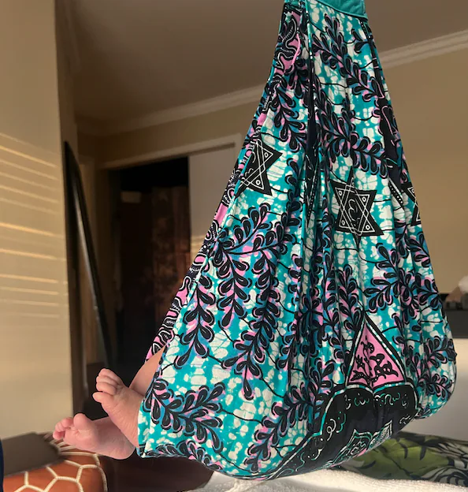

B880 · Being a new father...
Hi {first_name},
I am excited and blessed to share that two weeks ago, Lauren and our baby boy, Luca Valentino Salemi, was born.
He came early and unexpected, and seeing him healthy has been the greatest gift of my life.
In these past two weeks, I finally know what people have shared with me feels like - having a child is like having your heart outside of your body.
What I did not expect are some of the following:
In life, growth promoting events, whether perceived as "positive or negative", either happen to us, or we choose them.
Through stepping into fatherhood, I can say with conviction that I have a new level of purpose.
Purpose in not just being a father, but protecting the innocence of children as a whole, and supporting fathers in their journey of stepping into this calling.
I would like to share a little glimpse of our new nugget of joy.
As someone who has been a part of my community, I wanted to share that Laruen and I have decided to hold off on sharing more photos of him on Social Media as a personal preference. We feel he is so energetically porous right now, and we are simply loving being in our "cave" enjoying every moment.
 Thank you for being in this journey along with us.
In the near future, we will release a podcast with Dr. Nathan Riley, the Holistic OBGYN discussing our birth story, and on The Path Podcast not long after that.
In the meantime, we are sending you good energy, and want to thank you for all your support.
All my best, Mike |